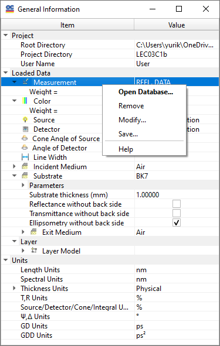
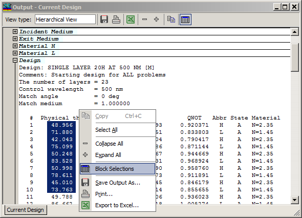

Right Mouse Button Popup Menus
Right Mouse Button Popup Menus
Navigation: General Information on OptiChar > Right Mouse Button Popup Menus |
` <idh_optilayer_main.htm>`__ ` <idh_optilayer.htm>`__ ` <quickstart.htm>`__ |
In many instances, you can right-click to activate a context menu that provides quick access to the most frequently used OptiChar tools. The specific tools available in this menu vary depending on the location within the program where the user activates it. Descriptions of these context menus can be found in the Help topics related to specific dialog boxes. In graphical windows, context menus include configuration settings for graphical displays. Similarly, in graphical windows, the Measurements Editing, and forthcoming features, context menus facilitate rapid switching between Spectral and Angular Modes.

The context menu of the General Information window provides quick access to a variety of useful functions for controlling OptiChar states and modes.

The popup menus in the Text Output Windows facilitate easy access to common editing commands such as Copy, Paste, and others. Additionally, these menus provide options for saving text output to an ASCII file and printing the output directly. This enhances usability and efficiency when working with text data.